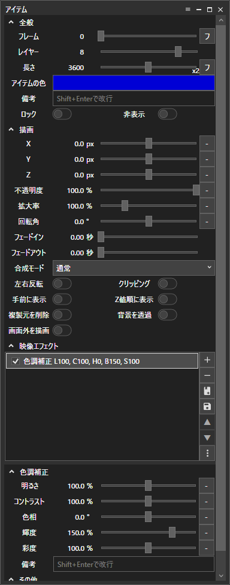
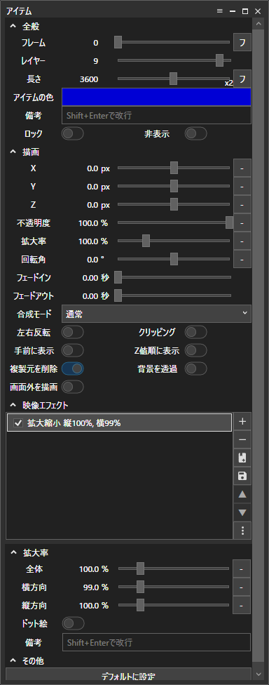

注意事項
編集するときはエフェクトのどれかを非表示にするか画質を下げて編集することをおすすめします
入れ方/使い方
1.タイムライン上部のテンプレートアイコン or 右クリック→テンプレートからアイテムを追加 → テンプレートを編集 でテンプレートの編集画面を開く
2.編集ウィンドウ左上の"テンプレートをインポート"アイコンを押す
3.ダウンロードしたymmtファイルを開く
4.インポート完了！
5.素材、映像の長さをご自由に調整
6.できた！
解説
背景
Aviutl版のノイズの役割 差分合成することで虹色のノイズも再現できてる(気がする)
上から2番目の画面の複製
VHS特有の字幕とかに見える残像みたいなやつ(語彙力)
2個の画面の複製で組み合わされていて、こっちは字幕の左側によく出る暗くなっている部分を再現
基本部分
彩度合成されてる
x座標が-5pxになってる理由は忘れた() 多分Aviutl版から直訳した時の名残
片方向ブラー
中核部分 てかこれやるためだけに存在してるだろこの映像エフェクト

上から3番目の画面の複製
残像その2
こっちはメインの部分 字幕の右側によく出る残像みたいな部分を再現
基本部分
同時に乗算合成で上記の片方向ブラーの効果をより発揮させている
片方向ブラー
中核部分
上から4番目の画面の複製
主にVHSの基礎(?)の部分
基本部分
焼き込み(リニア)合成にすることでそれっぽいコントラストにする
x座標を3pxずらしている
色反転
VHS特有の輪郭をx座標のずらしと組み合わせて再現している
色反転してあの独特な輪郭を作り出してるのは本物のVHSと同じという噂を聞いたことがある 真偽は不明
色調補正
行き過ぎたコントラストをここで調整
片方向ブラー
x座標ずらしと色反転で発生したくっきりしすぎた輪郭をここで滑らかにしている
上から5番目の画面の複製
輝度調整
基本部分
特になし
色調補正
このままでは輝度が低すぎるのでここで調整
4番目の画面の複製にある色調補正で一緒に行わない理由は合成モードが標準じゃないことが原因で輝度を上げても全体的に明るくならないから
上から6番目の画面の複製
画面の両端の黒い部分
基本部分
"複製元を削除"をオンにしないと黒い部分が生成されない
拡大縮小
横にほんの少しだけ押しつぶすことでそれっぽくしてる
上から7番目の画面の複製
画面の下の方にある少し映像がずれてるやつ
基本部分
x座標をすこし右にずらし、輝度合成にすることで同じようでちょっと違う映像(語彙力)感を出してる
クリッピング
画面の下にだけ表示するようにしてる
枠線
左の黒い謎の空間を無理矢理作ってる
ランダム移動
ランダム感を出してる